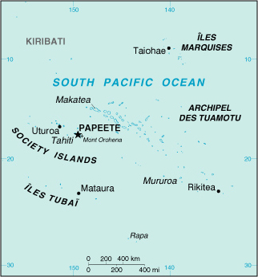

(overseas territory of France)
|
French Polynesia (overseas territory of France) |
|
| Introduction Geography People Government Economy Communications Transportation Military Transnational Issues | ||
|  | ||
| French Polynesia | Introduction | Top of Page |
| Background: | The French annexed various Polynesian island groups during the 19th century. In September 1995, France stirred up widespread protests by resuming nuclear testing on the Mururoa atoll after a three-year moratorium. The tests were suspended in January 1996. |
| French Polynesia | Geography | Top of Page |
| Location: | Oceania, archipelago in the South Pacific Ocean, about one-half of the way from South America to Australia |
| Geographic coordinates: | 15 00 S, 140 00 W |
| Map references: | Oceania |
| Area: |
total:
4,167 sq km (118 islands and atolls)
land: 3,660 sq km water: 507 sq km |
| Area - comparative: | slightly less than one-third the size of Connecticut |
| Land boundaries: | 0 km |
| Coastline: | 2,525 km |
| Maritime claims: |
exclusive economic zone:
200 NM
territorial sea: 12 NM |
| Climate: | tropical, but moderate |
| Terrain: | mixture of rugged high islands and low islands with reefs |
| Elevation extremes: |
lowest point:
Pacific Ocean 0 m
highest point: Mont Orohena 2,241 m |
| Natural resources: | timber, fish, cobalt, hydropower |
| Land use: |
arable land:
1%
permanent crops: 6% permanent pastures: 5% forests and woodland: 31% other: 57% (1993 est.) |
| Irrigated land: | NA sq km |
| Natural hazards: | occasional cyclonic storms in January |
| Environment - current issues: | NA |
| Geography - note: | includes five archipelagoes; Makatea in French Polynesia is one of the three great phosphate rock islands in the Pacific Ocean - the others are Banaba (Ocean Island) in Kiribati and Nauru |
| French Polynesia | People | Top of Page |
| Population: | 253,506 (July 2001 est.) |
| Age structure: |
0-14 years:
29.74% (male 38,473; female 36,925)
15-64 years: 65.17% (male 86,128; female 79,076) 65 years and over: 5.09% (male 6,481; female 6,423) (2001 est.) |
| Population growth rate: | 1.72% (2001 est.) |
| Birth rate: | 18.6 births/1,000 population (2001 est.) |
| Death rate: | 4.45 deaths/1,000 population (2001 est.) |
| Net migration rate: | 3.09 migrant(s)/1,000 population (2001 est.) |
| Sex ratio: |
at birth:
1.05 male(s)/female
under 15 years: 1.04 male(s)/female 15-64 years: 1.09 male(s)/female 65 years and over: 1.01 male(s)/female total population: 1.07 male(s)/female (2001 est.) |
| Infant mortality rate: | 9.12 deaths/1,000 live births (2001 est.) |
| Life expectancy at birth: |
total population:
75.01 years
male: 72.67 years female: 77.46 years (2001 est.) |
| Total fertility rate: | 2.23 children born/woman (2001 est.) |
| HIV/AIDS - adult prevalence rate: | NA% |
| HIV/AIDS - people living with HIV/AIDS: | NA |
| HIV/AIDS - deaths: | NA |
| Nationality: |
noun:
French Polynesian(s)
adjective: French Polynesian |
| Ethnic groups: | Polynesian 78%, Chinese 12%, local French 6%, metropolitan French 4% |
| Religions: | Protestant 54%, Roman Catholic 30%, other 16% |
| Languages: | French (official), Tahitian (official) |
| Literacy: |
definition:
age 14 and over can read and write
total population: 98% male: 98% female: 98% (1977 est.) |
| French Polynesia | Government | Top of Page |
| Country name: |
conventional long form:
Territory of French Polynesia
conventional short form: French Polynesia local long form: Territoire de la Polynesie Francaise local short form: Polynesie Francaise former: French Colony of Oceania |
| Dependency status: | overseas territory of France since 1946 |
| Government type: | NA |
| Capital: | Papeete |
| Administrative divisions: |
none (overseas territory of France); there are no first-order administrative divisions as defined by the US Government, but there are 5 archipelagic divisions named Archipel des Marquises, Archipel des Tuamotu, Archipel des Tubuai, Iles du Vent, and Iles Sous-le-Vent
note: Clipperton Island is administered by France from French Polynesia |
| Independence: | none (overseas territory of France) |
| National holiday: | Bastille Day, 14 July (1789) |
| Constitution: | 28 September 1958 (French Constitution) |
| Legal system: | based on French system |
| Suffrage: | 18 years of age; universal |
| Executive branch: |
chief of state:
President Jacques CHIRAC of France (since 17 May 1995), represented by High Commissioner of the Republic Paul RONCIERE (since NA 1994)
head of government: President of the Territorial Government of French Polynesia Gaston FLOSSE (since 4 April 1991); President of the Territorial Assembly Justin ARAPARI (since 13 May 1996) cabinet: Council of Ministers; president submits a list of members of the Territorial Assembly for approval by them to serve as ministers elections: French president elected by popular vote for a seven-year term; high commissioner appointed by the French president on the advice of the French Ministry of Interior; president of the Territorial Government and the president of the Territorial Assembly are elected by the members of the assembly |
| Legislative branch: |
unicameral Territorial Assembly or Assemblee Territoriale (41 seats; members are elected by popular vote to serve five-year terms)
elections: last held 12 May 1996 (next to be held NA 2001) election results: percent of vote by party - NA%; seats by party - People's Rally for the Republic (Gaullist) 22, Independent Front for the Liberation of Polynesia 10, New Fatherland Party 5, other 4 note: one seat was elected to the French Senate on 24 September 1989 (next to be held NA September 1998); results - percent of vote by party - NA; seats by party - UC 1; two seats were elected to the French National Assembly on 25 May - 1 June 1997 (next to be held NA 2002); results - percent of vote by party - NA; seats by party - People's Rally for the Republic (Gaullist) 2 |
| Judicial branch: | Court of Appeal or Cour d'Appel; Court of the First Instance or Tribunal de Premiere Instance; Court of Administrative Law or Tribunal Administratif |
| Political parties and leaders: | Centrist Union or UC [leader NA]; Independent Front for the Liberation of Polynesia (Tavini Huiraatira) [Oscar TEMARU]; New Fatherland Party (Ai'a Api) [Emile VERNAUDON]; People's Rally for the Republic (Tahoeraa Huiraatira) [Gaston FLOSSE] |
| Political pressure groups and leaders: | NA |
| International organization participation: | ESCAP (associate), FZ, ICFTU, SPC, WMO |
| Diplomatic representation in the US: | none (overseas territory of France) |
| Diplomatic representation from the US: | none (overseas territory of France) |
| Flag description: | two narrow red horizontal bands encase a wide white band; centered on the white band is a disk with blue and white wave pattern on the lower half and gold and white ray pattern on the upper half; a stylized red, blue and white ship rides on the wave pattern; the French flag is used for official occasions |
| French Polynesia | Economy | Top of Page |
| Economy - overview: | Since 1962, when France stationed military personnel in the region, French Polynesia has changed from a subsistence economy to one in which a high proportion of the work force is either employed by the military or supports the tourist industry. Tourism accounts for about one-fourth of GDP and is a primary source of hard currency earnings. The small manufacturing sector primarily processes agricultural products. The territory benefited from a five-year (1994-98) development agreement with France aimed principally at creating new jobs. |
| GDP: | purchasing power parity - $2.6 billion (1997 est.) |
| GDP - real growth rate: | 2.5% (1997 est.) |
| GDP - per capita: | purchasing power parity - $10,800 (1997 est.) |
| GDP - composition by sector: |
agriculture:
4%
industry: 18% services: 78% (1997) |
| Population below poverty line: | NA% |
| Household income or consumption by percentage share: |
lowest 10%:
NA%
highest 10%: NA% |
| Inflation rate (consumer prices): | 1.5% (1994) |
| Labor force: | 70,000 (1996) |
| Labor force - by occupation: | agriculture 13%, industry 19%, services 68% (1997) |
| Unemployment rate: | 15% (1992 est.) |
| Budget: |
revenues:
$1 billion
expenditures: $900 million, including capital expenditures of $185 million (1996) |
| Industries: | tourism, pearls, agricultural processing, handicrafts |
| Industrial production growth rate: | NA% |
| Electricity - production: | 430 million kWh (1999) |
| Electricity - production by source: |
fossil fuel:
51.16%
hydro: 48.84% nuclear: 0% other: 0% (1999) |
| Electricity - consumption: | 399.9 million kWh (1999) |
| Electricity - exports: | 0 kWh (1999) |
| Electricity - imports: | 0 kWh (1999) |
| Agriculture - products: | coconuts, vanilla, vegetables, fruits; poultry, beef, dairy products |
| Exports: | $205 million (f.o.b., 1999) |
| Exports - commodities: | cultured pearls 50%, coconut products, mother-of-pearl, vanilla, shark meat (1997) |
| Exports - partners: | Japan 62%, US 21% (1999) |
| Imports: | $749 million (f.o.b., 1999) |
| Imports - commodities: | fuels, foodstuffs, equipment |
| Imports - partners: | France 53%, US 13%, Australia 10% (1999) |
| Debt - external: | $NA |
| Economic aid - recipient: | $367 million (1997) |
| Currency: | Comptoirs Francais du Pacifique franc (XPF) |
| Currency code: | XPF |
| Exchange rates: | Comptoirs Francais du Pacifique francs (XPF) per US dollar - 127.11 (January 2001), 129.44 (2000), 111.93 (1999), 107.25 (1998), 106.11 (1997), 93.00 (1996); note - pegged at the rate of 119.25 XPF to the euro |
| Fiscal year: | calendar year |
| French Polynesia | Communications | Top of Page |
| Telephones - main lines in use: | 52,000 (1997) |
| Telephones - mobile cellular: | 5,427 (1997) |
| Telephone system: |
general assessment:
NA
domestic: NA international: satellite earth station - 1 Intelsat (Pacific Ocean) |
| Radio broadcast stations: | AM 2, FM 14, shortwave 2 (1998) |
| Radios: | 128,000 (1997) |
| Television broadcast stations: | 7 (plus 17 low-power repeaters) (1997) |
| Televisions: | 40,000 (1997) |
| Internet country code: | .pf |
| Internet Service Providers (ISPs): | 2 (2000) |
| Internet users: | 5,000 (2000) |
| French Polynesia | Transportation | Top of Page |
| Railways: | 0 km |
| Highways: |
total:
792 km
paved: 264 km unpaved: 528 km (2000) |
| Waterways: | none |
| Ports and harbors: | Mataura, Papeete, Rikitea, Uturoa |
| Merchant marine: |
total:
4 ships (1,000 GRT or over) totaling 5,240 GRT/7,765 DWT
ships by type: cargo 1, passenger/cargo 2, refrigerated cargo 1 (2000 est.) |
| Airports: | 45 (2000 est.) |
| Airports - with paved runways: |
total:
32
over 3,047 m: 2 1,524 to 2,437 m: 5 914 to 1,523 m: 19 under 914 m: 6 (2000 est.) |
| Airports - with unpaved runways: |
total:
13
914 to 1,523 m: 3 under 914 m: 10 (2000 est.) |
| French Polynesia | Military | Top of Page |
| Military branches: | French Forces (includes Army, Navy, Air Force), Gendarmerie |
| Military - note: | defense is the responsibility of France |
| French Polynesia | Transnational Issues | Top of Page |
| Disputes - international: | none |
{kind=link}
{kind=link}